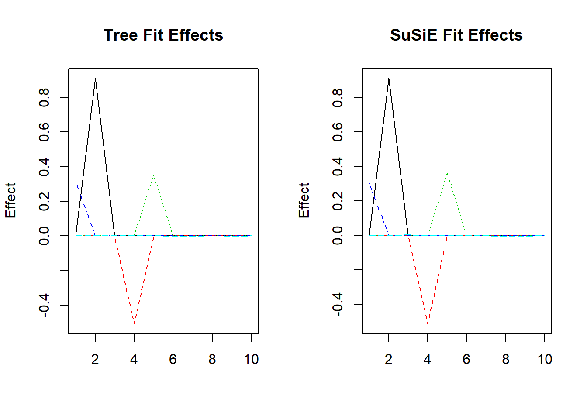
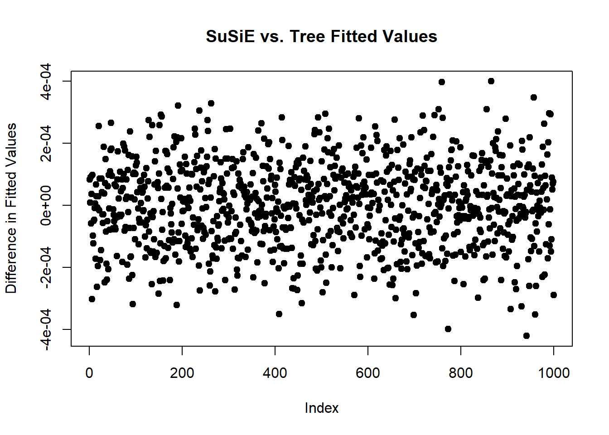
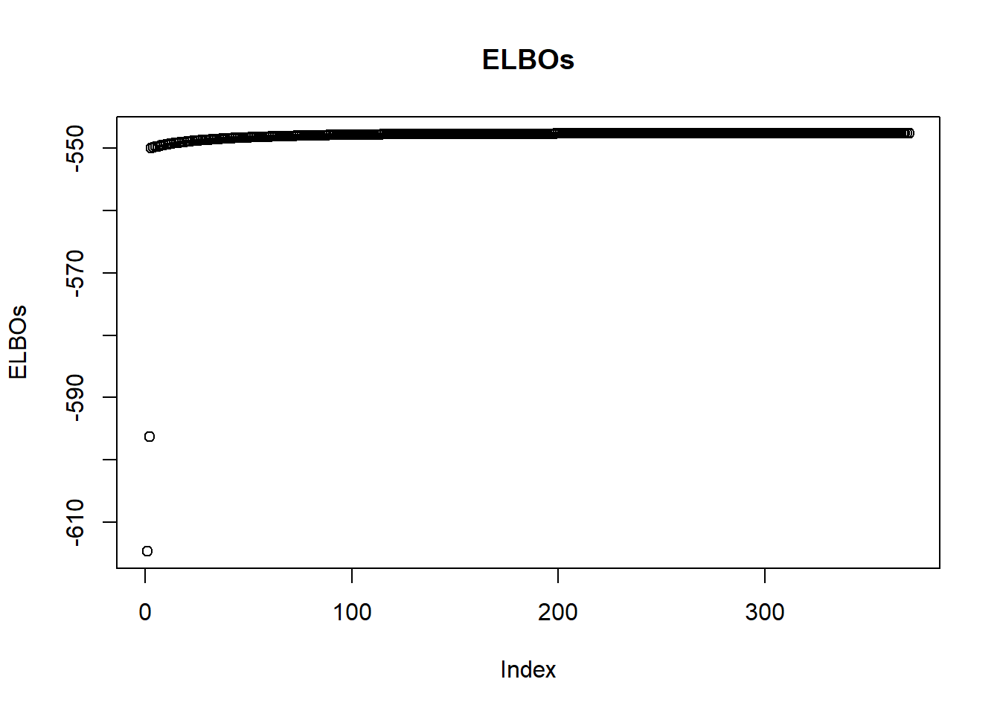
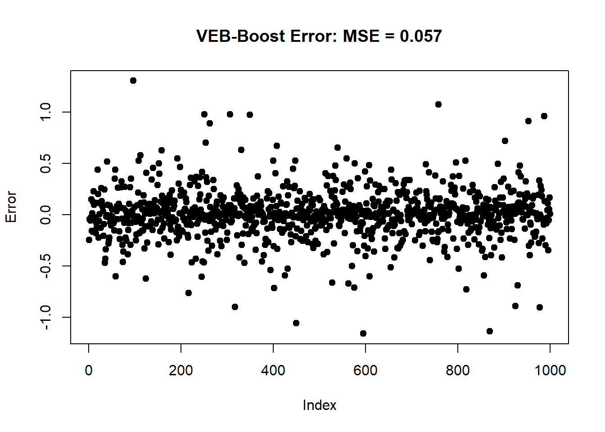
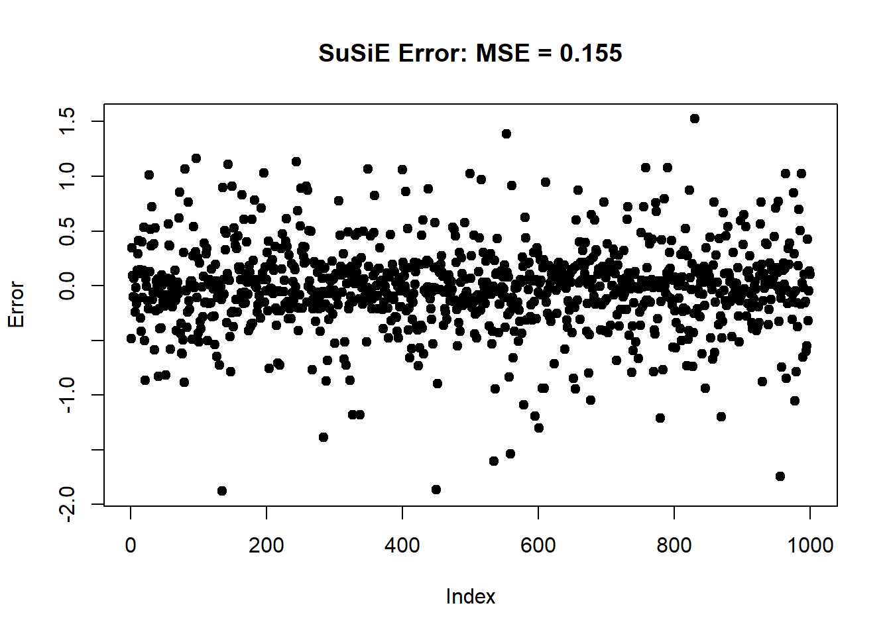

VEB Boost Derivation
Andrew Goldstein
September 10, 2019
Last updated: 2019-09-18
Checks: 6 1
Knit directory: VEB-Boost/
This reproducible R Markdown analysis was created with workflowr (version 1.4.0). The Checks tab describes the reproducibility checks that were applied when the results were created. The Past versions tab lists the development history.
Great! Since the R Markdown file has been committed to the Git repository, you know the exact version of the code that produced these results.
The global environment had objects present when the code in the R Markdown file was run. These objects can affect the analysis in your R Markdown file in unknown ways. For reproduciblity it’s best to always run the code in an empty environment. Use wflow_publish or wflow_build to ensure that the code is always run in an empty environment.
The following objects were defined in the global environment when these results were created:
| Name | Class | Size |
|---|---|---|
| data | environment | 56 bytes |
| env | environment | 56 bytes |
The command set.seed(20190909) was run prior to running the code in the R Markdown file. Setting a seed ensures that any results that rely on randomness, e.g. subsampling or permutations, are reproducible.
Great job! Recording the operating system, R version, and package versions is critical for reproducibility.
Nice! There were no cached chunks for this analysis, so you can be confident that you successfully produced the results during this run.
Great job! Using relative paths to the files within your workflowr project makes it easier to run your code on other machines.
Great! You are using Git for version control. Tracking code development and connecting the code version to the results is critical for reproducibility. The version displayed above was the version of the Git repository at the time these results were generated.
Note that you need to be careful to ensure that all relevant files for the analysis have been committed to Git prior to generating the results (you can use wflow_publish or wflow_git_commit). workflowr only checks the R Markdown file, but you know if there are other scripts or data files that it depends on. Below is the status of the Git repository when the results were generated:
working directory clean
Note that any generated files, e.g. HTML, png, CSS, etc., are not included in this status report because it is ok for generated content to have uncommitted changes.
These are the previous versions of the R Markdown and HTML files. If you’ve configured a remote Git repository (see ?wflow_git_remote), click on the hyperlinks in the table below to view them.
| File | Version | Author | Date | Message |
|---|---|---|---|---|
| Rmd | b873d17 | Andrew Goldstein | 2019-09-19 | Tweaking second example so all nodes use all variables |
| html | b5372e0 | Andrew Goldstein | 2019-09-18 | Build site. |
| Rmd | 850e830 | Andrew Goldstein | 2019-09-18 | Adding an example where we fit SuSiE model w/ Tree and compare |
| html | 9b006bb | Andrew Goldstein | 2019-09-17 | Build site. |
| Rmd | f838f83 | Andrew Goldstein | 2019-09-17 | Re-running, trying to get table to show properly |
| html | dc63d97 | Andrew Goldstein | 2019-09-17 | Build site. |
| Rmd | 7e3cd38 | Andrew Goldstein | 2019-09-17 | Re-running, trying to get table to show properly |
| html | 80dde2e | Andrew Goldstein | 2019-09-17 | Build site. |
| Rmd | 5305080 | Andrew Goldstein | 2019-09-17 | Re-running, trying to get table to show properly |
| html | 318826d | Andrew Goldstein | 2019-09-17 | Build site. |
| Rmd | 2b46e5e | Andrew Goldstein | 2019-09-17 | Re-running, trying to get table to show properly |
| html | 54bbc42 | Andrew Goldstein | 2019-09-17 | Build site. |
| Rmd | 1fe2900 | Andrew Goldstein | 2019-09-17 | Adding example |
| html | b340170 | Andrew Goldstein | 2019-09-17 | Build site. |
| Rmd | bcc274b | Andrew Goldstein | 2019-09-17 | Adding a blurb about identifiability issue in the sign of base learners |
| html | 43cf3df | Andrew Goldstein | 2019-09-17 | Build site. |
| Rmd | 1c0713e | Andrew Goldstein | 2019-09-17 | Fixing typo |
| html | 9a94e46 | Andrew Goldstein | 2019-09-17 | Build site. |
| Rmd | dc8b7b1 | Andrew Goldstein | 2019-09-17 | Adding a bit about moments of combined learners, and fixing one typo |
| html | ed20572 | Andrew Goldstein | 2019-09-13 | Build site. |
| Rmd | ecb7e16 | Andrew Goldstein | 2019-09-13 | Add a bit about what a base learner needs to do |
| html | 45d40fb | Andrew Goldstein | 2019-09-13 | Build site. |
| Rmd | 7f0b0f2 | Andrew Goldstein | 2019-09-13 | Updating w/ ELBO and sigma2 calculation |
| html | 70aa7fb | Andrew Goldstein | 2019-09-13 | Build site. |
| Rmd | a3a6b5f | Andrew Goldstein | 2019-09-13 | Minor tweaks |
| html | e2fdd55 | Andrew Goldstein | 2019-09-13 | Build site. |
| Rmd | 19f4ebc | Andrew Goldstein | 2019-09-13 | Fixing path to .png |
| html | 7d3a028 | Andrew Goldstein | 2019-09-13 | Build site. |
| Rmd | b7ffe6e | Andrew Goldstein | 2019-09-13 | Updating to rey to get .png to show up online |
| html | 2752096 | Andrew Goldstein | 2019-09-13 | Build site. |
| Rmd | be67c07 | Andrew Goldstein | 2019-09-13 | Updating with some math |
Introduction
The general idea of boosting is to combine many weak learners together to get a good learner. Typically, weak learners are combined together by fitting newer learners on the data, where we place higher weight on the data points that previous learners failed to fit accurately. We sequentially add these models together to create an additive model.
The idea behind VEB-Boosting (Variational Empirical Bayes-Boosting) is to combine base learners together in more complex ways. In particular, there are two general ways to combine learners: addition and (Schur) multiplication. Thus, we can define a learner recursively as:
A base learner;
A sum of two learners; or
A Schur product of two learners.
As a result, we can represent any learner as a binary tree, where each internal node is an operation combing the learners formed the child branches (\(+\) or \(\circ\)), and the terminal nodes represent base learners.
For example, consider the binary tree below: 
This tree represents the learner formed by the following: \[ \Big(\mu_1 \circ (\mu_2 + \mu_3)\Big) + (\mu_4 \circ \mu_5) \] (where \(\mu_j\) are our base learners).
By constructing our learner this way, we can construct more complex learners from our base learners than traditional boosting can.
All that is required of a base learner is being able to solve the general weighted regression problem using VEB, and be able to return its first 2 moments, as well as KL divergence.
Miscellaneous Preliminaries
We will see later that performing variational inference in the setting with a normally distributed response and unequal variances plays a key role.
General Weighted Regression
For the weighted version of a regression, we have: \[ \begin{aligned} Y = \mu + E \\ \mu \sim g(\cdot) \in \mathcal{G} \\ E \sim \mathcal{N}(0, diag(\vec{\sigma^2})) \\ \text{Where } \quad \vec{\sigma^2} = [\sigma_1^2, \dots, \sigma_n^2]^T \end{aligned} \]
In this case, the ELBO can be written as \[ F(q, g, \vec{\sigma^2}; y) = -\frac{n}{2}\log(2\pi) - \frac{1}{2} \sum_{i=1}^n \log(\sigma_i^2) - \frac{1}{2}\mathbb{E}_q\Bigg[\Bigg\|\Big(y \circ \frac{1}{\vec{\sigma}}\Big) - \Big(\mu \circ \frac{1}{\vec{\sigma}}\Big)\Bigg\|_2^2\Bigg] + \mathbb{E}_q \Bigg[\log \frac{g(\mu)}{q(\mu)}\Bigg] \]
Then the form of the VB update is: \[ \begin{aligned} q(\mu = \mathbf{c}) \propto \exp\Bigg\{\log\Big(g(\mathbf{c})\Big) + \log\Big(p(Y|\mu = \mathbf{c}\Big)\Bigg\} = \\ \exp\Bigg\{\log\Big(g(\mathbf{c})\Big) - \frac{n}{2} \log(2\pi) - \frac{1}{2} \sum_{i=1}^n \log(\sigma_i^2) + \frac{1}{\sigma_i^2}\Big(Y_i - \mathbf{c}_i\Big)^2\Bigg\} \propto \\ \exp\Bigg\{\log\Big(g(\mathbf{c})\Big) - \frac{1}{2} \sum_{i=1}^n \frac{1}{\sigma_i^2}\Big(\mathbf{c}_i^2 - 2\mathbf{c}_iY_i\Big)\Bigg\} \end{aligned} \]
Formal Model
Let \(T(\mu_1, \dots, \mu_K)\) be the learner implied by a given tree structure \(T\) and base learners \(\mu_j\). Then the formal model for VEB-Boosting for the given tree and base learners is given by: \[ \begin{aligned} Y = T\Big(\mu_1, \dots, \mu_L\Big) + E \\ \mu_j \stackrel{\perp}{\sim} g_j(\cdot) \in \mathcal{G}_j, \quad j = 1, \dots, L \\ E \sim \mathcal{N}(0, \sigma^2 I_n) \\ \end{aligned} \]
To fit this model, we use variational inference with a mean-field approximation \(\mathcal{Q}\): \[ q\Big(\mu_1, \dots, \mu_L\Big) = \prod_{j=1}^L q_j\Big(\mu_j\Big) \]
Describing a Base Learner’s Role in the Tree
For any given base learner \(\mu_j\) in the tree \(T(\mu_1, \dots, \mu_K)\), we can define the tree as a sequence of operations involving our base learner \(\mu_j\) and learners \(\nu_s\).
In order to achieve this, let the position of any node in the tree be given by a string of L’s and R’s, where “L” signifies going left in the tree and “R” signifies going right, and the string “\(\cdot\)” corresponds to the root node. At a given string position \(s\) for an internal node, let the operator at that position be given by \(\oplus_s\), and let the learner that’s described by the subtree whose root is the given internal node be given by \(\nu_s\). And say a string \(s\) is given by the sequence \(s = d_1 \cdots d_K\), where each \(d_k \in \{L, R\}\). Then define \(\bar{d_k}\) as switching the direction.
For example, the position of \(\mu_2\) in the example tree above is \(s = LRL\). Then we can describe the tree as: \[ \nu_R + \Big[\nu_{LL} \circ \Big(\mu_2 + \nu_{LRR}\Big)\Big] \]
In general, for a base learner at a terminal node at position \(s = d_1 \cdots d_K\), we can describe the tree as: \[ \nu_{\bar{d_1}} \oplus_\cdot \Bigg(\nu_{d_1 \bar{d_2}} \oplus_{d_1} \Big(\nu_{d_1 d_2 \bar{d_3}} \oplus_{d_2} \cdots (\mu_j \oplus_{d_1 d_2 \cdots d_{k-1}} \nu_{d_1 d_2 \cdots d_{k-1} \bar{d_k}}) \cdots\Big)\Bigg) \]
In words, we halve the tree at each step, combining the half that doesn’t include \(\mu_j\) into a single learner and repeat until we get to \(\mu_j\).
Combining Learners
Recall, there are two ways to combine learners, “\(+\)” and “\(\circ\)”. When we combine learners, we need to properly calculate the moments of the resulting learner.
Consider learners \(\nu_1 \sim q_1\), \(\nu_2 \sim q_2\), where \(q_1, \; q_2\) are our variational distributions, and \(q_1 \perp q_2\) (as per our variational class).
If we combine \(\nu := \nu_1 + \nu_2\), then: \[ \begin{aligned} \mathbb{E}_{q_1, q_2}[\nu] = \mathbb{E}_{q_1, q_2}[\nu_1 + \nu_2] = \bar{\nu_1} + \bar{\nu_2} \\ \mathbb{E}_{q_1, q_2}[\nu^2] = \mathbb{E}_{q_1, q_2}[\nu_1^2 + 2\nu_1\nu_2 + \nu_2^2] = \bar{\nu_1^2} + 2\bar{\nu_1}\bar{\nu_2} + \bar{\nu_2^2} \end{aligned} \]
If we combine \(\nu := \nu_1 \circ \nu_2\), then: \[ \begin{aligned} \mathbb{E}_{q_1, q_2}[\nu] = \mathbb{E}_{q_1, q_2}[\nu_1 \circ \nu_2] = \bar{\nu_1} \circ \bar{\nu_2} \\ \mathbb{E}_{q_1, q_2}[\nu^2] = \mathbb{E}_{q_1, q_2}[\nu_1^2 \circ \nu_2^2] = \bar{\nu_1^2} \circ \bar{\nu_2^2} \end{aligned} \]
Cautionary Note
One observation worth noting is that there is an identifiability issue present for the signs of the base learners when we include Schur multiplication, and our prior distribution for \(\mu_j\) is symmetric about 0. For example, in the example tree above, we can flip the signs for \(\mu_1\) and \(\mu_2, \; \mu_3\) jointly. This will yield the same tree-defined mean. So if our priors for these base learners is symmetric about 0, then we cannot identify the sign of the base learners.
Although this does not alter the fitted values for the overall learner, this makes interpretation more difficult. It also raises the point that the distributions for different nodes are far from independent from one another, despite our variational approximation. However, this is usually the case when making the standard independence assumption in variational inference.
Derivation of VEB Coordinate Ascent Updates
To solve the VEB problem, \(\arg \max_{q \in \mathcal{Q}, g \in \mathcal{G}, \theta \in \Theta} F(q, g, \sigma^2;y)\), we can perform coordinate ascent updates, where we update each \((q_l, g_l)\) individually, and then update \(\sigma^2\).
Under this model, we can write the ELBO as \[ F(q, g, \sigma^2;y) = \mathbb{E}_q\Bigg[\log p(y|\mu, \sigma^2)\Bigg] + \sum_{l=1}^L \mathbb{E}_{q_l} \Bigg[\log \frac{g_l(\mu_l)}{q_l(\mu_l)}\Bigg] = \\ \mathbb{E}_q\Bigg[-\frac{n}{2} \log(2\pi\sigma^2) - \frac{1}{2} \Bigg\|\Big(Y \circ \frac{1}{\vec{\sigma}}\Big) - \Big(T(\mu) \circ \frac{1}{\vec{\sigma}}\Big)\Bigg\|_2^2\Bigg] + \sum_{l=1}^L \mathbb{E}_{q_l} \Bigg[\log \frac{g_l(\mu_l)}{q_l(\mu_l)}\Bigg] \]
In terms of a specific \(\mu_j\) in position \(s = d_1 \cdots d_K\) (and the corresponding \(q_j\) and \(g_j\)), we can write the ELBO as \[ \mathbb{E}_{q_j} \Bigg[-\frac{n}{2} \log(2\pi\sigma^2) - \frac{1}{2} \mathbb{E}_{q_{-j}} \Big[\Big\|\Big(Y \circ \frac{1}{\vec{\sigma}}\Big) - \Big(T(\mu) \circ \frac{1}{\vec{\sigma}}\Big)\Big\|_2^2\Big]\Bigg] + \sum_{l=1}^L \mathbb{E}_{q_l} \Bigg[\log \frac{g_l(\mu_l)}{q_l(\mu_l)}\Bigg] = \\ \mathbb{E}_{q_j}\Bigg[-\frac{1}{2} \mathbb{E}_{q_{-j}}\Big[\Big\|\Big(Y \circ \frac{1}{\vec{\sigma}}\Big) - \Big(T(\mu) \circ \frac{1}{\vec{\sigma}}\Big)\Big\|_2^2\Big]\Bigg] + \mathbb{E}_{q_j} \Bigg[\log \frac{g_j(\mu_j)}{q_j(\mu_j)}\Bigg] + (const \; in \; \mu_j,q_j, g_j) = \\ \mathbb{E}_{q_j}\Bigg[-\frac{1}{2} \mathbb{E}_{q_{-j}}\Big[\Big\|\Big(Y \circ \frac{1}{\vec{\sigma}}\Big) - \Big(\nu_{\bar{d_1}} \oplus_\cdot \Bigg(\nu_{d_1 \bar{d_2}} \oplus_{d_1} \Big(\nu_{d_1 d_2 \bar{d_3}} \oplus_{d_2} \cdots (\mu_j \oplus_{d_1 d_2 \cdots d_{k-1}} \nu_{d_1 d_2 \cdots d_{k-1} \bar{d_k}}) \cdots\Big)\Bigg) \circ \frac{1}{\vec{\sigma}}\Big)\Big\|_2^2\Big]\Bigg] + \mathbb{E}_{q_j} \Bigg[\log \frac{g_j(\mu_j)}{q_j(\mu_j)}\Bigg] + (const \; in \; \mu_j,q_j, g_j) \]
For a given operator \(\oplus\), and implied distribution over \(\nu_2\) (with first moment \(\bar{\nu_2}\) and second moment \(\bar{\nu_2^2}\)), define \[ \nu_1 \bar{\oplus} \nu_2 := \begin{cases} \nu_1 - \bar{\nu_2}, \quad \text{if } \oplus = + \\ \nu_1 \circ \frac{\bar{\nu_2}}{\bar{\nu_2^2}}, \quad \text{if } \oplus = \circ \end{cases} \]
Next, define \[ \tilde{Y} := \Bigg(\cdots \Big( (Y \bar{\oplus}_\cdot \nu_{\bar{d_1}}) \bar{\oplus}_{d_1} \nu_{d_1 \bar{d_2}}\Big) \bar{\oplus}_{d_1d_2} \cdots \bar{\oplus}_{d_1 \cdots d_{K-1}} \nu_{d_1 \cdots d_{k-1}\bar{d_K}}\Bigg) \] and define \[ \vec{Q^2} := \circ_s \bar{\nu_{sd}^2} \] where \(s\) runs over all partials string of \(d_1 \cdots d_{K-1}\) such that \(\oplus_s = \circ\) and \(d\) follows \(s\) in \(d_1 \cdots d_{K}\).
With these definitions in place, we make the following claim: \[ \mathbb{E}_{q_j}\Bigg[-\frac{1}{2} \mathbb{E}_{q_{-j}}\Big[\Big\|\Big(Y \circ \frac{1}{\vec{\sigma}}\Big) - \Big(\nu_{\bar{d_1}} \oplus_\cdot \Bigg(\nu_{d_1 \bar{d_2}} \oplus_{d_1} \Big(\nu_{d_1 d_2 \bar{d_3}} \oplus_{d_2} \cdots (\mu_j \oplus_{d_1 d_2 \cdots d_{k-1}} \nu_{d_1 d_2 \cdots d_{k-1} \bar{d_k}}) \cdots\Big)\Bigg) \circ \frac{1}{\vec{\sigma}}\Big)\Big\|_2^2\Big]\Bigg] + \mathbb{E}_{q_j} \Bigg[\log \frac{g_j(\mu_j)}{q_j(\mu_j)}\Bigg] + (const \; in \; \mu_j,q_j, g_j) = \\ \mathbb{E}_{q_j} \Bigg[-\frac{1}{2} \Bigg\|\Big(\tilde{Y} \circ \vec{\frac{Q}{\sigma}}\Big) - \Big(\mu_j \circ \vec{\frac{Q}{\sigma}}\Big)\Bigg\|_2^2\Bigg] + \mathbb{E}_{q_j} \Bigg[\log \frac{g_j(\mu_j)}{q_j(\mu_j)}\Bigg] + (const \; in \; \mu_j,q_j, g_j) \]
We prove this claim by induction over \(K\), the length of the string defining the position of \(\mu_j\) in the tree.
Base case: \(K = 1\) In this case, the ELBO is \[ \mathbb{E}_{q_j} \Bigg[-\frac{1}{2} \mathbb{E}_{q_{-j}} \Big[\Big\|\Big(Y \circ \frac{1}{\vec{\sigma}}\Big) - \Big((\mu_j \oplus_\cdot \nu_{\bar{d_1}}) \circ \frac{1}{\vec{\sigma}}\Big)\Big\|_2^2\Big]\Bigg] + \mathbb{E}_{q_j} \Bigg[\log \frac{g_j(\mu_j)}{q_j(\mu_j)}\Bigg] + (const \; in \; \mu_j,q_j, g_j) \]
\(\oplus_\cdot = +\) \[ \begin{aligned} \mathbb{E}_{q_j} \Bigg[-\frac{1}{2} \mathbb{E}_{q_{-j}} \Big[\Big\|\Big(Y \circ \frac{1}{\vec{\sigma}}\Big) - \Big((\mu_j + \nu_{\bar{d_1}}) \circ \frac{1}{\vec{\sigma}}\Big)\Big\|_2^2\Big]\Bigg] = \mathbb{E}_{q_j} \Bigg[-\frac{1}{2} \mathbb{E}_{q_{-j}} \Big[\Big\|\Big((Y - \nu_{\bar{d_1}}) \circ \frac{1}{\vec{\sigma}}\Big) - \Big(\mu_j \circ \frac{1}{\vec{\sigma}}\Big)\Big\|_2^2\Big]\Bigg] = \\ \mathbb{E}_{q_j} \Bigg[-\frac{1}{2} \Bigg(\mathbb{E}_{q_{-j}} \Big[\Big\|(Y - \nu_{\bar{d_1}}) \circ \frac{1}{\vec{\sigma}}\Big\|_2^2\Big] - 2\Big((Y - \bar{\nu}_{\bar{d_1}}) \circ \frac{1}{\vec{\sigma}}\Big)^T\Big(\mu_j \circ \frac{1}{\vec{\sigma}}\Big) + \Big\|\mu_j \circ \frac{1}{\vec{\sigma}}\Big\|_2^2\Bigg)\Bigg] = \\ \mathbb{E}_{q_j} \Bigg[-\frac{1}{2} \Big\|\Big(Y - \bar{\nu}_{\bar{d_1}}\Big) \circ \frac{1}{\vec{\sigma}} - \mu_j \circ \frac{1}{\vec{\sigma}} \Big\|_2^2\Bigg] + (const \; in \; \mu_j,q_j, g_j) \end{aligned} \]
\(\oplus_\cdot = \circ\) \[ \begin{aligned} \mathbb{E}_{q_j} \Bigg[-\frac{1}{2} \mathbb{E}_{q_{-j}} \Big[\Big\|\Big(Y \circ \frac{1}{\vec{\sigma}}\Big) - \Big((\mu_j \circ \nu_{\bar{d_1}}) \circ \frac{1}{\vec{\sigma}}\Big)\Big\|_2^2\Big]\Bigg] = \mathbb{E}_{q_j} \Bigg[-\frac{1}{2} \Bigg(-2\Big(Y \circ \frac{1}{\vec{\sigma}}\Big)^T \Big(\mu_j \circ \bar{\nu}_{\bar{d_1}} \circ \frac{1}{\vec{\sigma}}\Big) + \Big\|\mu_j \circ \sqrt{\bar{\nu^2}_{\bar{d_1}}} \circ \frac{1}{\vec{\sigma}}\Big\|_2^2\Bigg)\Bigg] + (const \; in \; \mu_j,q_j, g_j) = \\ \mathbb{E}_{q_j} \Bigg[-\frac{1}{2} \Bigg\|\Big(Y \circ \frac{\bar{\nu}_{\bar{d_1}}}{\bar{\nu^2}_{\bar{d_1}}}\Big) \circ \frac{\sqrt{\bar{\nu^2}_{\bar{d_1}}}}{\vec{\sigma}} - \mu_j\circ \frac{\sqrt{\bar{\nu^2}_{\bar{d_1}}}}{\vec{\sigma}}\Bigg\|_2^2\Bigg] + (const \; in \; \mu_j,q_j, g_j) \end{aligned} \]
In both cases, the ELBO has the desired form.
Inductive Step: Assume true for \(K-1\) In this case, the ELBO is \[ \mathbb{E}_{q_j}\Bigg[-\frac{1}{2} \mathbb{E}_{q_{-j}}\Big[\Big\|\Big(Y \circ \frac{1}{\vec{\sigma}}\Big) - \Big(\nu_{\bar{d_1}} \oplus_\cdot \Bigg(\nu_{d_1 \bar{d_2}} \oplus_{d_1} \Big(\nu_{d_1 d_2 \bar{d_3}} \oplus_{d_2} \cdots (\mu_j \oplus_{d_1 d_2 \cdots d_{k-1}} \nu_{d_1 d_2 \cdots d_{k-1} \bar{d_k}}) \cdots\Big)\Bigg) \circ \frac{1}{\vec{\sigma}}\Big)\Big\|_2^2\Big]\Bigg] + \mathbb{E}_{q_j} \Bigg[\log \frac{g_j(\mu_j)}{q_j(\mu_j)}\Bigg] + (const \; in \; \mu_j,q_j, g_j) \] Define \[ \nu_{d_1} := \Bigg(\nu_{d_1 \bar{d_2}} \oplus_{d_1} \Big(\nu_{d_1 d_2 \bar{d_3}} \oplus_{d_2} \cdots (\mu_j \oplus_{d_1 d_2 \cdots d_{k-1}} \nu_{d_1 d_2 \cdots d_{k-1} \bar{d_k}}) \cdots\Big)\Bigg) \]
So we can write the ELBO more compactly as \[ \mathbb{E}_{q_j}\Bigg[-\frac{1}{2} \mathbb{E}_{q_{-j}}\Big[\Big\|\Big(Y \circ \frac{1}{\vec{\sigma}}\Big) - \Big(\nu_{\bar{d_1}} \oplus_\cdot \nu_{d_1} \circ \frac{1}{\vec{\sigma}}\Big)\Big\|_2^2\Big]\Bigg] + \mathbb{E}_{q_j} \Bigg[\log \frac{g_j(\mu_j)}{q_j(\mu_j)}\Bigg] + (const \; in \; \mu_j,q_j, g_j) \]
\(\oplus_\cdot = +\) \[ \begin{aligned} \mathbb{E}_{q_j}\Bigg[-\frac{1}{2} \mathbb{E}_{q_{-j}}\Big[\Big\|\Big(Y \circ \frac{1}{\vec{\sigma}}\Big) - \Big(\nu_{\bar{d_1}} + \nu_{d_1} \circ \frac{1}{\vec{\sigma}}\Big)\Big\|_2^2\Big]\Bigg] = \mathbb{E}_{q_j}\Bigg[-\frac{1}{2} \mathbb{E}_{q_{-j}}\Big[\Big\|\Big((Y - \nu_{\bar{d_1}} ) \circ \frac{1}{\vec{\sigma}}\Big) - \Big(\nu_{d_1} \circ \frac{1}{\vec{\sigma}}\Big)\Big\|_2^2\Big]\Bigg] = \\ [\text{Split expectation over} -j] = \\ \mathbb{E}_{q_j}\Bigg[-\frac{1}{2} \mathbb{E}_{d_1} \mathbb{E}_{\bar{d_1}}\Big[\Big\|\Big((Y - \nu_{\bar{d_1}} ) \circ \frac{1}{\vec{\sigma}}\Big) - \Big(\nu_{d_1} \circ \frac{1}{\vec{\sigma}}\Big)\Big\|_2^2\Big]\Bigg] = \mathbb{E}_{q_j}\Bigg[-\frac{1}{2} \mathbb{E}_{d_1} \Big[-2\Big((Y - \bar{\nu}_{\bar{d_1}}) \circ \frac{1}{\vec{\sigma}}\Big)^T\Big(\nu_{d_1} \circ \frac{1}{\vec{\sigma}}\Big) + \Big\|\nu_{d_1} \circ \frac{1}{\vec{\sigma}}\Big\|_2^2\Big]\Bigg] + (const \; in \; \mu_j,q_j, g_j) = \\ \mathbb{E}_{q_j}\Bigg[-\frac{1}{2} \mathbb{E}_{d_1} \Big[\Big\|\Big((Y - \bar{\nu}_{\bar{d_1}}) \circ \frac{1}{\vec{\sigma}}\Big) - \Big(\nu_{d_1} \circ \frac{1}{\vec{\sigma}}\Big)\Big\|_2^2\Big]\Bigg] + (const \; in \; \mu_j,q_j, g_j) = \\ [\text{Inductive step, with response } Y - \bar{\nu}_{\bar{d_1}}] = \\ \mathbb{E}_{q_j} \Bigg[-\frac{1}{2} \Bigg\|\Big(\tilde{Y} \circ \vec{\frac{Q}{\sigma}}\Big) - \Big(\mu_j \circ \vec{\frac{Q}{\sigma}}\Big)\Bigg\|_2^2\Bigg] + (const \; in \; \mu_j,q_j, g_j) \end{aligned} \]
\(\oplus_\cdot = \circ\) \[ \begin{aligned} \mathbb{E}_{q_j}\Bigg[-\frac{1}{2} \mathbb{E}_{q_{-j}}\Big[\Big\|\Big(Y \circ \frac{1}{\vec{\sigma}}\Big) - \Big(\nu_{\bar{d_1}} \circ \nu_{d_1} \circ \frac{1}{\vec{\sigma}}\Big)\Big\|_2^2\Big]\Bigg] = \mathbb{E}_{q_j}\Bigg[-\frac{1}{2} \mathbb{E}_{q_{-j}}\Big[-2\Big(Y \circ \nu_{\bar{d_1}} \circ \frac{1}{\vec{\sigma}}\Big)^T \Big(\nu_{d_1} \circ \frac{1}{\vec{\sigma}}\Big) + \Big\|\nu_{\bar{d_1}} \circ \nu_{d_1} \circ \frac{1}{\vec{\sigma}}\Big\|_2^2\Big]\Bigg] + (const \; in \; \mu_j,q_j, g_j) = \\ [\text{Split expectation over} -j] = \\ \mathbb{E}_{q_j}\Bigg[-\frac{1}{2} \mathbb{E}_{d_1}\Big[-2\Big(Y \circ \bar{\nu}_{\bar{d_1}} \circ \frac{1}{\vec{\sigma}}\Big)^T \Big(\nu_{d_1} \circ \frac{1}{\vec{\sigma}}\Big) + \Big\|\sqrt{\bar{\nu^2}_{\bar{d_1}}} \circ \nu_{d_1} \circ \frac{1}{\vec{\sigma}}\Big\|_2^2\Big]\Bigg] + (const \; in \; \mu_j,q_j, g_j) = \\ \mathbb{E}_{q_j} \Bigg[-\frac{1}{2} \mathbb{E}_{d_1} \Big[\Big\|\Big(Y \circ \frac{\bar{\nu}_{\bar{d_1}}}{\bar{\nu^2}_{\bar{d_1}}} \circ \frac{\sqrt{\bar{\nu^2}_{\bar{d_1}}}}{\vec{\sigma}}\Big) - \Big(\nu_{d_1} \circ \frac{\sqrt{\bar{\nu^2}_{\bar{d_1}}}}{\vec{\sigma}}\Big)\Big\|_2^2\Big]\Bigg] + (const \; in \; \mu_j,q_j, g_j) = \\ = \\ [\text{Inductive Step, with response } Y \circ \frac{\bar{\nu}_{\bar{d_1}}}{\bar{\nu^2}_{\bar{d_1}}} \circ \frac{\sqrt{\bar{\nu^2}_{\bar{d_1}}}}{\vec{\sigma}} \text{and variances } \frac{\bar{\nu^2}_{\bar{d_1}}}{\vec{\sigma}}] = \\ \mathbb{E}_{q_j} \Bigg[-\frac{1}{2} \Bigg\|\Big(\tilde{Y} \circ \vec{\frac{Q}{\sigma}}\Big) - \Big(\mu_j \circ \vec{\frac{Q}{\sigma}}\Big)\Bigg\|_2^2\Bigg] + (const \; in \; \mu_j,q_j, g_j) \end{aligned} \]
Thus, the claim has been shown.
As a consequence, the claim shows that we can update each \((q_j, g_j)\) by finding the VEB solution to the weighted regression problem with response \(\tilde{Y}\) and variances \(\vec{\frac{\sigma^2}{Q^2}}\). All we need are the first 2 moments from all other base learners, the tree structure in order to reconstruct how the other learners are related to \(\mu_j\), and a function to solve the desired VEB problem corresponding to the prior class for \(\mu_j\).
Calculating the ELBO
After all base learners have been updated, calculating the ELBO is straightforward. As before, we can write the ELBO as \[ \mathbb{E}_q\Bigg[-\frac{n}{2} \log(2\pi\sigma^2) - \frac{1}{2} \Bigg\|\Big(Y \circ \frac{1}{\vec{\sigma}}\Big) - \Big(T(\mu) \circ \frac{1}{\vec{\sigma}}\Big)\Bigg\|_2^2\Bigg] + \sum_{l=1}^L \mathbb{E}_{q_l} \Bigg[\log \frac{g_l(\mu_l)}{q_l(\mu_l)}\Bigg] \]
We can simiplify this as \[ -\frac{n}{2} \log(2\pi\sigma^2) - \frac{1}{2\sigma^2} \Bigg[\Big\|Y\Big\|_2^2 - 2Y^T \overline{T(\mu)} + \Big\|\sqrt{\overline{T(\mu)^2}} \Big\|_2^2\Bigg] + \sum_{l=1}^L \mathbb{E}_{q_l} \Bigg[\log \frac{g_l(\mu_l)}{q_l(\mu_l)}\Bigg] = \\ -\frac{n}{2} \log(2\pi\sigma^2) - \frac{1}{2\sigma^2} \Bigg[\Big\|Y\Big\|_2^2 - 2Y^T \overline{T(\mu)} + \Big\|\sqrt{\overline{T(\mu)^2}} \Big\|_2^2\Bigg] - \sum_{l=1}^L D_{KL}\Big(Q_l \| G_l\Big) \]
If we store the KL divergergence for each of our terminal nodes, the first 2 moments of the fitted models at each terminal node, and have a way of calculating the first 2 moments for the entire tree, then calculating the ELBO is easy.
Updating \(\sigma^2\)
After our coordinate ascent steps for \((q_l, g_l)\), we can take a coordinate ascent step fof \(\sigma^2\). We simply maximize the ELBO w.r.t. \(\sigma^2\), which from the above expression (after taking the partial derivative w.r.t. \(\sigma^2\) and setting to 0) gives us \[ \widehat{\sigma^2} = \frac{1}{n}\Bigg[\Big\|Y\Big\|_2^2 - 2Y^T \overline{T(\mu)} + \Big\|\sqrt{\overline{T(\mu)^2}} \Big\|_2^2\Bigg] \]
Examples
Below, I load the VEB-Boost-Node object, and define some functions needed for running a weighted SuSiE SER.
source("./code/VEB_Boost_Node.R") # load VEB_Boost_Node object
# function for calculating 2nd moment for weighted SER
calc_Q = function(X, Sigma2, Mu, Alpha) {
# X is data matrix
# Sigma2[j, l] is the posterior variance for b_l when entry j is selected, p x L
# Mu[j, l] is the posterior mean for b_l when entry j is selected, p x L
# Alpha[j, l] is the posterior probability selecting entry j from b_l, p x L
# Z is matrix of covariates (e.g. column for intercept, top 10 PCs, etc)
# delta is current estimate for effects of Z variables
ASU2 = Alpha * (Sigma2 + Mu^2) # [j, l] = alpha[j, l] * (Sigma2[j, l] + Mu[j, l]^2)
Q = rowSums(X^2 %*% ASU2) # start w/ sum_l E_(ql)[(x_i' b_l)^2]
return(Q)
}
# function for calculating KL divergence for weighted SER
calc_KL = function(Mu, Alpha, Sigma2, prior_var = 1) {
p = nrow(Mu)
L = ncol(Mu)
prior_weights = rep(1/p, p)
P = matrix(prior_weights, nrow = p, ncol = L)
b_post = rowSums(Alpha * Mu)
prior_var = matrix(prior_var, nrow = p, ncol = L, byrow = T)
KL_div = Alpha * (log(Alpha) - log(P) + (log(prior_var) / 2) - (log(Sigma2) / 2) - .5 + ((Sigma2 + Mu^2) / (2 * prior_var)))
KL_div[Alpha == 0] = 0
return(sum(KL_div))
}
# function to perform weighted SER
weighted_SER = function(X, Y, sigma2, prior_var = 1) {
if (length(sigma2) == 1) {
sigma2 = rep(sigma2, nrow(X))
}
prior_weights = rep(1 / ncol(X), ncol(X))
tau = (t(X^2) %*% (1 / sigma2)) + (1 / prior_var)
nu = colSums(X * Y / sigma2)
alpha = log(prior_weights) - (.5 * log(tau)) + (.5 * nu^2 / tau)
alpha = alpha - max(alpha)
alpha = exp(alpha)
alpha = alpha / sum(alpha)
mu = nu / tau
sigma2_post = 1 / tau
mu1 = X %*% (alpha * mu)
mu2 = calc_Q(X, sigma2_post, mu, alpha)
KL_div = calc_KL(mu, alpha, sigma2_post, prior_var)
return(list(mu1 = as.numeric(mu1), mu2 = as.numeric(mu2), KL_div = KL_div, alpha = alpha, mu = mu, sigma2_post = sigma2_post))
}
### MAKE DATA
set.seed(1138)
n = 1000
X = matrix(rnorm(10 * n), nrow = n)
beta = c(rnorm(5), rep(0, 5))
library(susieR) # for laterSuSiE Example
If all operators are “+”, and each fitting function is a single effect regression with the SuSiuE SER prior, and the same matrix of predictors is used for all base learners, then this is equivalent to SuSiE with \(L\) effects (where \(L\) is the number of terminal nodes in our tree)
Below, I generate data from the SuSiE model with \(L = 5\) effects. I also generate 5 “null” variables to include in my model fitting procedure. I fit the data with a regular SuSiE call (without an intercept), as well as using VEB-Boost with a tree structure with 5 terminal nodes and all operators are “+”. For simplicity, I fix the prior variance to be 1 in both cases rather than estimate it.
mu_true = as.numeric(X %*% beta)
Y = mu_true + rnorm(n)
fitFn = function(Y, sigma2, init) {
return(weighted_SER(X, Y, sigma2))
}
# generate learner, initialize fits w/ fit function w/ full response Y and variance sigma2
learner = VEBBoostNode$new(".", operator = "+")
learner$Y = Y
learner$sigma2 = 1
L = learner$AddChildVEB("L", operator = "+")$
AddChildVEB("mu_1", fitFunction = fitFn, currentFit = list(mu1 = rep(0, length(Y)), mu2 = rep(1, length(Y)), KL_div = 1))$parent$
AddChildVEB("LR", operator = "+")$
AddChildVEB("mu_2", fitFunction = fitFn, currentFit =list(mu1 = rep(0, length(Y)), mu2 = rep(1, length(Y)), KL_div = 1))$parent$
AddChildVEB("mu_3", fitFunction = fitFn, currentFit = list(mu1 = rep(0, length(Y)), mu2 = rep(1, length(Y)), KL_div = 1))$root$
AddChildVEB("R", operator = "+")$
AddChildVEB("mu_4", fitFunction = fitFn, currentFit = list(mu1 = rep(0, length(Y)), mu2 = rep(1, length(Y)), KL_div = 1))$parent$
AddChildVEB("mu_5", fitFunction = fitFn, currentFit = list(mu1 = rep(0, length(Y)), mu2 = rep(1, length(Y)), KL_div = 1))
# update until ELBO increase is < 1e-6, track ELBO along the way
ELBOs = numeric(100)
ELBOs[1] = -Inf
ELBOs[2] = learner$ELBO
i = 2
while (ELBOs[i] - ELBOs[i-1] > 1e-6) {
learner$Do(function(x) x$updateFit(), filterFun = function(x) x$isLeaf)
i = i+1
ELBOs[i] = learner$ELBO
}
ELBOs = ELBOs[2:i]
susie.fit = fit.susie = susie(X, Y, L = 5, scaled_prior_variance = 1 / var(Y), intercept = F, tol = 1e-6)In the code above, when fitting the tree, I have forced the initialization of the base learners to have a first moment of 0 and a second moment of 1 (in an attempt to initialize in a similar way to SuSiE). I have also fit SuSiE without an intercept for simplicity.
The first two plots below show the effect vectors from each of the 5 effects, fitted from the tree and SuSiE respectively. The third plot shows the difference between the fitted values between the tree and SuSiE fit.
effect_mat_tree = matrix(0, nrow = ncol(X), ncol = 5)
for (i in 1:5) {
name = paste("mu_", i, sep = "")
node = learner$FindNode(name)
effect_mat_tree[, i] = node$currentFit$mu * node$currentFit$alpha
}
par(mfrow = c(1, 2))
matplot(effect_mat_tree, type = 'l', ylab = "Effect", main = "Tree Fit Effects")
matplot(t(susie.fit$mu * susie.fit$alpha), type = 'l', ylab = "Effect", main = "SuSiE Fit Effects")
| Version | Author | Date |
|---|---|---|
| b5372e0 | Andrew Goldstein | 2019-09-18 |
par(mfrow = c(1, 1))
plot(susie.fit$fitted - learner$mu1, ylab = "Difference in Fitted Values", main = "SuSiE vs. Tree Fitted Values", pch = 19)
| Version | Author | Date |
|---|---|---|
| b5372e0 | Andrew Goldstein | 2019-09-18 |
The plots show that the fitted effect vectors are virtually identical, and that the fitted values are almost 0.
Example with Truth Generated from the Tree Structure Image Above
In this section, I carry out an example, where the true mean response follows the tree structure in the example tree. For simplicity, each \(\mu_j\) results from a single effect, where we have a true effect variable \(X_j\) with corresponding effect \(\beta_j\). The fitting function at each node is a weighted SER, where we include all 5 effect variables, as well as 5 null variables (the same null variables are used at each node).
mu_true = ((X[, 1]*beta[1]) * ((X[, 2]*beta[2]) + (X[, 3]*beta[3]))) + ((X[, 4]*beta[4]) * (X[, 5]*beta[5]))
Y = mu_true + rnorm(n)
### Define fitting functions for each node
fitFn = function(Y, sigma2, init) {
return(weighted_SER(X, Y, sigma2))
}
# generate learner, initialize fits w/ fit function w/ full response Y and variance sigma2
learner = VEBBoostNode$new(".", operator = "+")
learner$Y = Y
learner$sigma2 = 1
L = learner$AddChildVEB("L", operator = "*")$
AddChildVEB("mu_1", fitFunction = fitFn, currentFit = fitFn(learner$Y, learner$sigma2, NULL))$parent$
AddChildVEB("LR", operator = "+")$
AddChildVEB("mu_2", fitFunction = fitFn, currentFit = fitFn(learner$Y, learner$sigma2, NULL))$parent$
AddChildVEB("mu_3", fitFunction = fitFn, currentFit = fitFn(learner$Y, learner$sigma2, NULL))$root$
AddChildVEB("R", operator = "*")$
AddChildVEB("mu_4", fitFunction = fitFn, currentFit = fitFn(learner$Y, learner$sigma2, NULL))$parent$
AddChildVEB("mu_5", fitFunction = fitFn, currentFit = fitFn(learner$Y, learner$sigma2, NULL))
# update until ELBO increase is < 1e-6, track ELBO along the way
ELBOs = numeric(100)
ELBOs[1] = -Inf
ELBOs[2] = learner$ELBO
i = 2
while (ELBOs[i] - ELBOs[i-1] > 1e-6) {
learner$Do(function(x) x$updateFit(), filterFun = function(x) x$isLeaf)
i = i+1
ELBOs[i] = learner$ELBO
}
ELBOs = ELBOs[2:i]First, we can plot the ELBOs:
plot(ELBOs, main = "ELBOs")
| Version | Author | Date |
|---|---|---|
| b5372e0 | Andrew Goldstein | 2019-09-18 |
As a sanity-check, we see that the ELBO is monotonically increasing. However, to achieve this level of convergence, it took 370 iterations.
Next, we can look at the fitted models at each node and see how they performed.
make_table = function(i) {
name = paste("mu_", i, sep = "")
node = learner$FindNode(name)
beta_true = ifelse(name == "mu_1", beta[1],
ifelse(name == "mu_2", beta[2],
ifelse(name == "mu_3", beta[3],
ifelse(name == "mu_4", beta[4], beta[5]))))
alpha = node$currentFit$alpha[i]
mu = node$currentFit$mu[i]
return(c(alpha, mu, beta_true))
}
fit_table = sapply(1:5, make_table)
row.names(fit_table) = c("alpha", "mu", "beta_true")
library(xtable)
print(xtable(fit_table, caption = "Base Learner Fits"), comment = F, type = "html")| 1 | 2 | 3 | 4 | 5 | |
|---|---|---|---|---|---|
| alpha | 1.00 | 1.00 | 0.00 | 0.10 | 0.10 |
| mu | 0.35 | 1.01 | -0.03 | 0.00 | -0.00 |
| beta_true | 0.35 | 0.94 | -0.02 | -0.56 | 0.38 |
Our SERs were effectively able to identify the relevant variables on the left side of our tree. However, we were unable to fit \(\mu_4\) or \(\mu_5\) well. I am not sure why we observe this behavior. A different initialization may remedy the issue.
Next, we can look at the errors between the true mean values and the fitted first moment. As a comparison, we can fit the data (all 5 real variables and 5 null variables) with a SuSiE model where we set \(L = 5\).
fit.susie = susie(X, Y, L = 5)
MSE_VEB = mean((mu_true - learner$mu1)^2)
plot(mu_true - learner$mu1, ylab = "Error", main = paste("VEB-Boost Error: MSE = ", round(MSE_VEB, 3), sep = ""), pch = 19)
| Version | Author | Date |
|---|---|---|
| b5372e0 | Andrew Goldstein | 2019-09-18 |
MSE_SuSiE = mean((mu_true - fit.susie$fitted)^2)
plot(mu_true - fit.susie$fitted, ylab = "Error", main = paste("SuSiE Error: MSE = ", round(MSE_SuSiE, 3), sep = ""), pch = 19)
| Version | Author | Date |
|---|---|---|
| b5372e0 | Andrew Goldstein | 2019-09-18 |
We can see that VEB-Boost outperformed SuSiE, which is expected due to the non-linear nature of the truth.
sessionInfo()R version 3.6.1 (2019-07-05)
Platform: x86_64-w64-mingw32/x64 (64-bit)
Running under: Windows 10 x64 (build 18362)
Matrix products: default
locale:
[1] LC_COLLATE=English_United States.1252
[2] LC_CTYPE=English_United States.1252
[3] LC_MONETARY=English_United States.1252
[4] LC_NUMERIC=C
[5] LC_TIME=English_United States.1252
attached base packages:
[1] stats graphics grDevices utils datasets methods base
other attached packages:
[1] xtable_1.8-4 susieR_0.6.2.0390
loaded via a namespace (and not attached):
[1] tidyselect_0.2.5 xfun_0.8 Rook_1.1-1
[4] purrr_0.3.2 lattice_0.20-38 colorspace_1.4-1
[7] vctrs_0.2.0 expm_0.999-4 htmltools_0.3.6
[10] viridisLite_0.3.0 yaml_2.2.0 XML_3.98-1.20
[13] rlang_0.4.0 pillar_1.4.2 glue_1.3.1
[16] RColorBrewer_1.1-2 matrixStats_0.54.0 stringr_1.4.0
[19] munsell_0.5.0 gtable_0.3.0 workflowr_1.4.0
[22] data.tree_0.7.8 visNetwork_2.0.8 htmlwidgets_1.3
[25] evaluate_0.14 knitr_1.23 DiagrammeR_1.0.1
[28] highr_0.8 Rcpp_1.0.1 readr_1.3.1
[31] backports_1.1.4 scales_1.0.0 jsonlite_1.6
[34] rgexf_0.15.3 fs_1.3.1 gridExtra_2.3
[37] brew_1.0-6 ggplot2_3.2.0 hms_0.5.0
[40] digest_0.6.20 stringi_1.4.3 dplyr_0.8.3
[43] grid_3.6.1 rprojroot_1.3-2 influenceR_0.1.0
[46] tools_3.6.1 magrittr_1.5 lazyeval_0.2.2
[49] tibble_2.1.3 crayon_1.3.4 whisker_0.3-2
[52] tidyr_0.8.3 pkgconfig_2.0.2 zeallot_0.1.0
[55] Matrix_1.2-17 downloader_0.4 assertthat_0.2.1
[58] rmarkdown_1.14 rstudioapi_0.10 viridis_0.5.1
[61] R6_2.4.0 igraph_1.2.4.1 git2r_0.26.1
[64] compiler_3.6.1